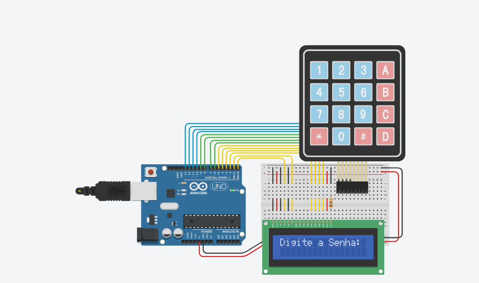
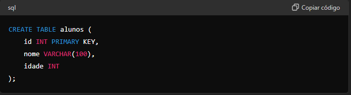

Automação Industrial
Aprender automação industrial com C++, Arduino e ESP32 foi um processo gradual e enriquecedor. Começar com fundamentos de programação e avançar para microcontroladores mais poderosos abriu novas possibilidades para criar sistemas automáticos eficientes e inteligentes. A prática contínua e a exploração de novos projetos são essenciais para o desenvolvimento de habilidades em automação industrial..
falando um pouco sobre O Arduino é uma plataforma de prototipagem eletrônica de código aberto, composta por hardware e software fáceis de usar. Foi criada com o objetivo de tornar a eletrônica mais acessível a todos, desde iniciantes até profissionais.
falando um pouco sobre O ESP32 é um microcontrolador altamente integrado desenvolvido pela Espressif Systems. Ele é amplamente utilizado em projetos de Internet das Coisas (IoT) e automação devido à sua potência, conectividade integrada e versatilidade.
projetos
aqui um projeto utilizando o Arduino
aqui outro projeto com o Arduino
aqui um projeto utilizando o esp32
Desenvolvimento Web
em deswinvolvimento web pude aprender html css e javascript vou citar o que pude aprender e mostrar alguns projetos
HTML
O HTML usa uma estrutura baseada em tags, onde cada tag serve para delimitar diferentes tipos de conteúdo e suas respectivas funções dentro do documento. Essas tags são elementos que contêm o conteúdo ou os indicam, como cabeçalhos, parágrafos, listas, links, entre outros. Embora as tags sejam essenciais no HTML, o que realmente define o conteúdo é a disposição do texto entre essas tags.
Além de estruturar o conteúdo, HTML também suporta a integração com outras tecnologias da web, como CSS (Cascading Style Sheets) para estilização visual e JavaScript para comportamentos interativos e dinâmicos. Essa combinação de HTML com CSS e JavaScript é fundamental para a construção de websites modernos, permitindo uma experiência de usuário rica e interativa.
CSS

CSS (Cascading Style Sheets) é uma linguagem usada para definir a apresentação de documentos HTML ou XML. Ela permite controlar a aparência de elementos como cores, fontes, espaçamento, layout e responsividade, separando a estrutura do conteúdo da sua aparência visual. As regras de estilo são aplicadas a elementos selecionados com base em seletores, que podem ser tags HTML, classes, IDs ou atributos. O CSS funciona de forma cascata, ou seja, as regras podem ser sobrepostas ou herdadas de estilos anteriores, com uma ordem de precedência bem definida
Além disso, permite criar layouts responsivos que se adaptam a diferentes tamanhos de tela e dispositivos. A utilização de CSS facilita a manutenção e atualização do design de um site, tornando-o mais consistente e eficiente.
JavaScript

JavaScript é uma linguagem de programação amplamente usada para desenvolvimento web, tanto no lado do cliente quanto no lado do servidor. Criada inicialmente para adicionar interatividade a páginas web, ela permite a criação de interfaces dinâmicas e responsivas. No lado do cliente, é executada pelos navegadores, possibilitando manipulação do DOM (Document Object Model), validação de formulários e comunicação assíncrona com servidores através de AJAX. No lado do servidor, com o Node.js, permite a criação de aplicativos escaláveis e de alto desempenho
No lado do servidor, com o Node.js, permite a criação de aplicativos escaláveis e de alto desempenho. JavaScript é conhecida por ser uma linguagem de tipagem dinâmica, baseada em protótipos e multi-paradigma, suportando programação orientada a objetos, funcional e imperativa. Sua popularidade e vasto ecossistema de bibliotecas e frameworks, como React, Angular e Vue.js, a tornam essencial no desenvolvimento moderno de aplicações web.
Projetos
mostrarei alguns projetos feitos em sala de aula
calculadora
calculadora imc
DOM
Linguagem de Programação
Variáveis
Variáveis são contêineres para armazenar dados que podem ser alterados durante a execução do programa.
Elas são declaradas especificando o tipo de dado e o nome, e podem ser inicializadas com um valor.
Existem dois tipos principais de variáveis: primitivas (como int, double, char, boolean) e de referência (como String).
As variáveis têm diferentes escopos: variáveis locais (declaradas dentro de métodos), variáveis de instância (declaradas dentro da classe, mas fora de métodos,
e acessíveis por todas as instâncias da classe),
e variáveis de classe ou estáticas (declaradas com static, compartilhadas entre todas as instâncias da classe).

Estruturas de decisão As estruturas de decisão em Java permitem que um programa execute diferentes blocos de código com base em condições específicas. As principais são
1.If: Executa um bloco de código se a condição for verdadeira.
2.If-else: Executa um bloco de código se a condição for verdadeira e outro se for falsa.

3.Switch: Seleciona e executa um bloco de código baseado no valor de uma variável.

As estruturas de repetição em Java permitem executar um bloco de código várias vezes, com base em uma condição. As principais são
1.for: Usa-se quando se sabe o número de iterações.
2.while: Executa o bloco de código enquanto a condição é verdadeira.
3.do-while: Executa o bloco pelo menos uma vez antes de verificar a condição.
Funções: Funções são blocos de instruções que são executados somente quando “chamados”. Funções pode ter parâmetros, valores que são passados durante sua chamada. Funções também podem ter retorno, um valor que é retornado para o local de chamada da função.
Funções Recursivas São funções que executam a chamada delas mesmas dentro de seu próprio bloco de instruções. Veja o exemplo:
Banco de Dados
vou falar um pouco sobre os dois principais tipos de banco de Dados
SQL (Relacionais): Os bancos de dados relacionais são mais rígidos em termos de estrutura, pois organizam os dados em tabelas que precisam se relacionar entre si. Eles seguem padrões importantes e uma estrutura predefinida geralmente estabelecida por uma pessoa ou equipe. Exemplos de bancos de dados relacionais incluem MySQL, PostgreSQL e Oracle.
NoSQL (Não Relacionais): Os bancos de dados NoSQL são mais flexíveis em termos de estrutura de dados. Eles utilizam um formato JSON e adotam diferentes modelos de dados, como documentos, chave-valor, colunas ou grafos. Isso permite maior flexibilidade e escalabilidade. Exemplos de bancos de dados NoSQL incluem MongoDB, Redis, Cassandra e Neo4j.

vou falar sobre um pouco sobre padrões ddl e dml e para que servem
DDL é utilizado para criar e modificar a estrutura do banco de dados. Ele define como os dados serão armazenados e organizados, garantindo que a estrutura seja adequada às necessidades da aplicação.
DML significa Linguagem de Manipulação de Dados. É outro subconjunto da SQL utilizado para inserir, atualizar, deletar e recuperar dados armazenados nas tabelas de um banco de dados. Os comandos DML lidam diretamente com os dados contidos nos objetos definidos pelo DDL.
comandos DDL
CREATE: Cria novos objetos no banco de dados, como tabelas, índices, e visões.
ALTER: Modifica a estrutura de objetos existentes no banco de dados, como adicionar ou remover colunas de uma tabela.
DROP: Remove objetos do banco de dados, como tabelas ou índices

comandos DML
SELECT: Recupera dados de uma ou mais tabelas
INSERT: Insere novos registros em uma tabela.
UPDATE: Atualiza dados existentes em uma tabela
DELETE: Remove registros de uma tabela
Ciência de Dados
amostragem
vou falar sobre o que pude entender sobre amostragem
A amostragem basicamente consiste em selecionar um número de dados para tirar conclusões ou tomar decisões da forma mais eficiente possível. É muito importante saber de onde os dados são coletados e como podemos, a partir deles, tirar conclusões adequadas. Por exemplo, se queremos determinar quantos animais vivem em uma região que inclui tanto áreas terrestres quanto lagos, não podemos registrar apenas os animais terrestres. Sem considerar a vida aquática, estaríamos perdendo dados importantes e não conseguiríamos chegar a um total preciso. Esse método é essencial para diversas áreas de trabalho. Em grandes empresas, a sensação de que estamos sendo "espionados" pelos nossos aparelhos é comum. Por exemplo, quando falamos que gostaríamos de um celular novo e, logo depois, começamos a ver anúncios de celulares
moda
pude entender sobre moda
Moda em um conjunto de dados é o dado com maior frequência absoluta. Um conjunto de dados pode ser: - **Modal**: quando um conjunto possui uma única moda. N = {35, **37**, 36, 34, 38, 35, **37**, **37**, 33, 36, 38, **37**,35, **37**, 34, 33, **37**, 36, 35, 38, 36, 35, 36, **37**, 38, 39, **37**, **37**, 36, **37**, 33, **37**, 35, **37**, 39} Mo = {37} - **Bimodal**: quando um conjunto possui duas modas. A = {**1**, **0**, 2, 3, **1**, 4, 5, **1**, **0**, 3, **0**, 7, 8, 9, **0**, **1**} Mo={0,1} - **Polimodal**: quando um conjunto possui três ou mais modas. - **Amodal**: quando todos os dados possuem a mesma frequência.
mediana
Dado um conjunto numérico, conhecemos como **mediana** o valor que ocupa a posição central dos valores quando organizamos esses dados em ordem. Para encontrar a mediana, é possível listar os termos em ordem crescente ou decrescente e encontrar o termo que ocupa a posição central. **Encontrando a mediana de conjunto com número de elementos ímpar:** A = { 1.79 m, 1.72 m, 1.63 m, 1.82 m, 1.65 m, 1.75 m, 1,80 m} 1. Colocar os valores em ordem A = {1.63, 1.65, 1.72, 1.75, 1.79, 1.80, 1.82} 2. Encontrar o valor central A = {1.63, 1.65, 1.72, **1.75**, 1.79, 1.80, 1.82} $Me = 1.75$ **Encontrando a mediana de conjunto com número de elementos par:** A = { 1.79 m, 1.72 m, 1.63 m, 1.82 m, 1.65 m, 1.75 m} 1. Colocar os valores em ordem A = {1.63, 1.65, 1.72, 1.75, 1.79, 1.82} 2. Encontrar os dois valores centrais A = {1.63, 1.65, **1.72**, **1.75**, 1.79, 1.82} 3. Calcular a média aritmética entre os dois valores centrais: $Me = (1,72 + 1,75)/2$ $Me = 1,735$
media
Entre as medidas centrais, a mais utilizada é a média. Existem vários tipos de média, mas as mais comuns são a média aritmética simples e a média aritmética ponderada. **Média Aritmética** A média aritmética é calculada pela soma de todos os elementos do conjunto dividida pela quantidade de elementos do conjunto. $$ \bar{x}=\sum_{i=1}^n \frac{x_{i}}{n} $$ $$ \bar{x}=\frac{x_{1}+x_{2}+x_{3}...+x_{n}}{n} $$ n → quantidade de elementos